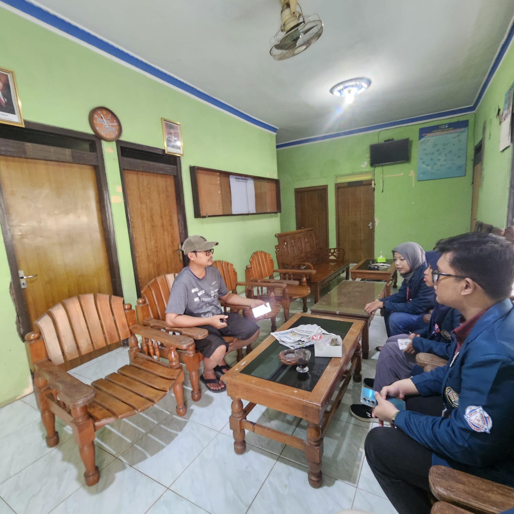
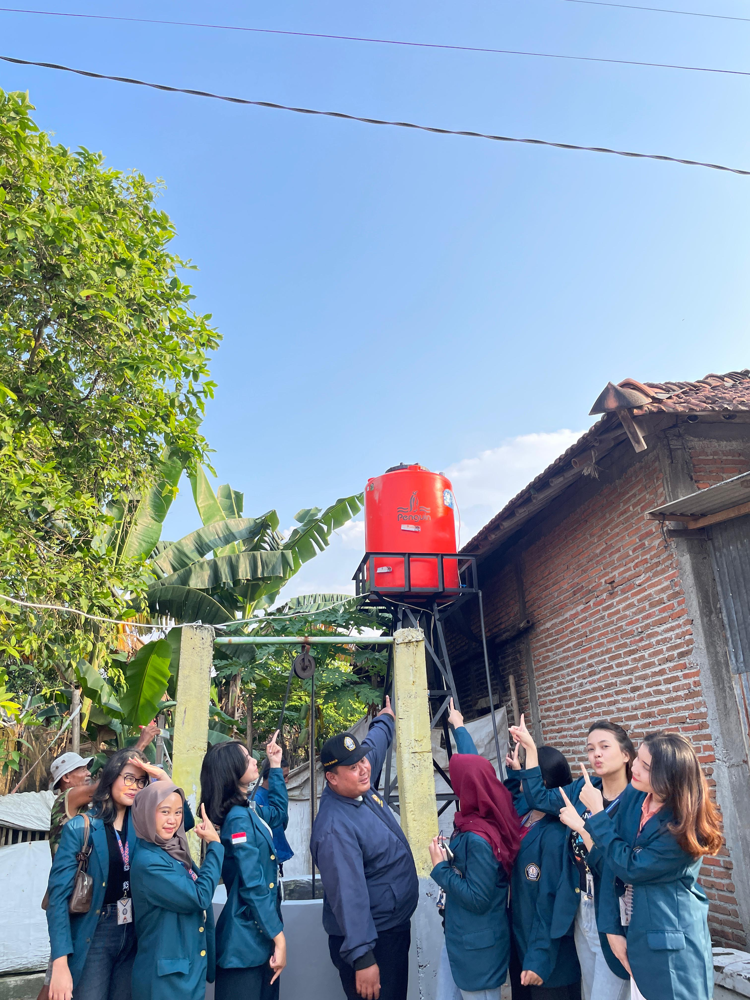
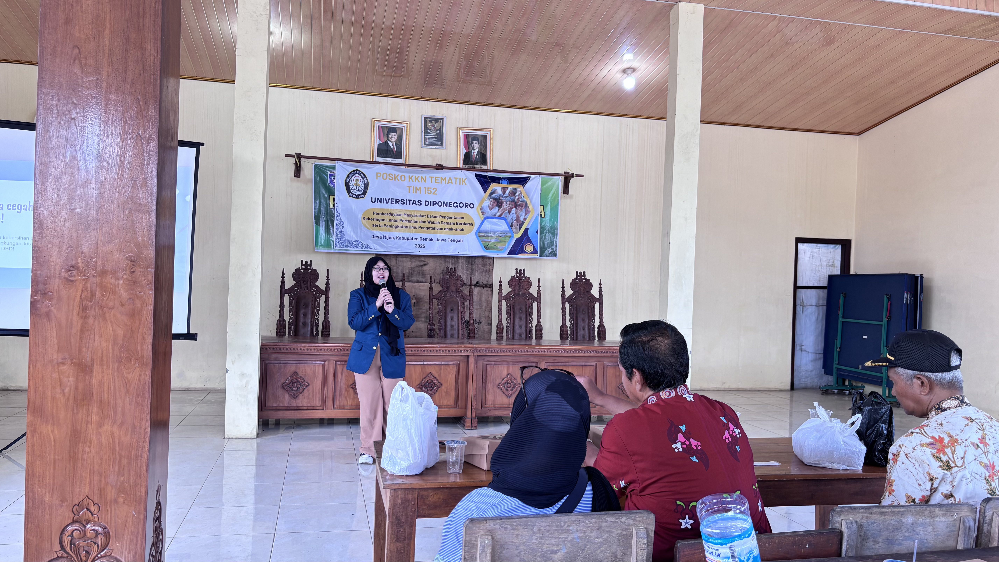
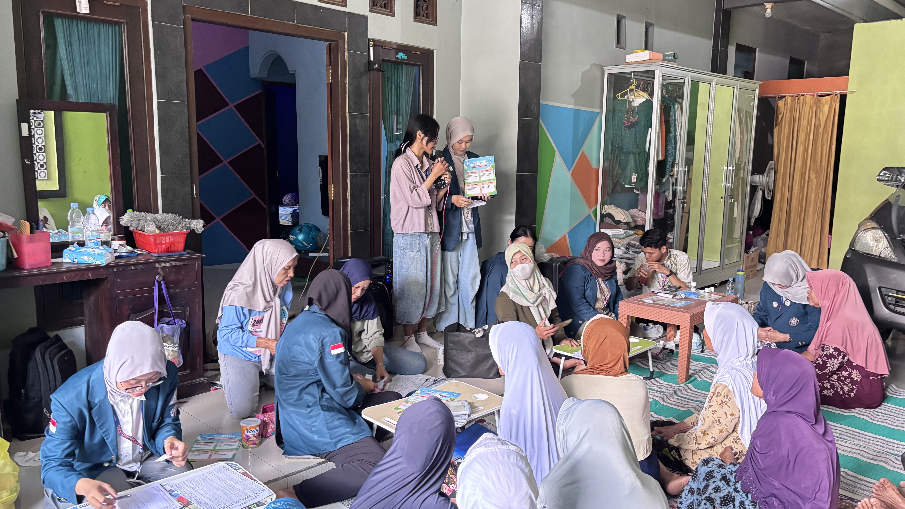
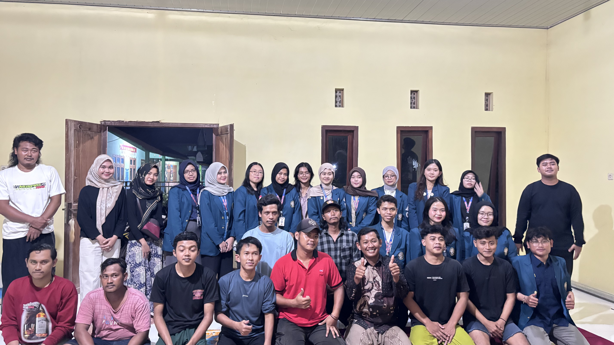

Galeri Kegiatan
Dokumentasi kegiatan KKN Desa Mijen untuk pemberdayaan masyarakat.
Penanganan Kekeringan
Inisiatif untuk mengatasi kekeringan melalui pembangunan sistem irigasi dan konservasi air.
Kegiatan survey lokasi
Kegiatan survey lokasi pemasangan Tandon di RW 2 kecamatan Mijen, Demak.
Diskusi bersama Perangkat Desa
Diskusi Bersama untuk mencari titik pemasangan tandon dalam pengentasan kekeringan.
Proses Pemasangan Tandon Air
Proses Pemasangan Tandon Air di RW 03 Untuk pengentasan Kekeringan .
Mencegah Wabah Demam Berdarah
Kampanye dan aksi nyata untuk mencegah penyebaran demam berdarah melalui pendekatan 3M Plus.
Pembuatan Ovitrap

Pembuatan Ovitrap sebagai alat untuk mengurangi nyamuk penyebab DBD.
Sosialisasi Pembuatan Ovitrap

Sosialisasi Pembuatan Ovitrap sebagai langkah preventif dalam penanggulangan wabah DBD.
Penyuluhan Wabah DBD
Penyuluhan Langkah Penanggulangan secara preventif Wabah DBD.
Meningkatkan Ilmu Pengetahuan Anak-anak
Pendidikan inovatif dan berkelanjutan untuk anak-anak melalui kegiatan belajar yang menyenangkan.
Kunjungan ke SDN 1 Mijen
Sowan Ke Kepala Sekolah SDN 1 Mijen dalam rangka pembelajaran anak.
Proses Pembelajaran SDN 1 Mijen
Proses Pemebelajaran anak SD melalui program KKN dengan konsep Fun Game.
Proses Pembelajaran Anak di SDN 2 Mijen
Proses Pemebelajaran anak SD melalui program KKN dengan konsep Fun Game.
Penyerahan Kenang-Kenangan
Penyerahan Kenang-Kenangan dan Tanda Terimakasih pada Pihak Sekolah.
Kegiatan Lainnya
Program Yang Berkaitan dengan Masyarakat.
Pengecekan Kesehatan Untuk Lansia
Kegiatan Pengecekan Gratis untuk Lansia dalam rangka menjaga kesehatan.
Sosialisasi Pentingnya Cek Kesehatan

Sosialisasi Pentingnya cek kesehatan secara berkala bagi Lansia.
Kumpul Rutin Karang Taruna
Kegiatan Rutin Karang Taruna di Desa Mijen dalam rangka silahturahmi bersama .
Penyerahan Kenang-Kenangan
Penyerahan Kenang-Kenangan dan Tanda Terimakasih pada Pihak Sekolah.